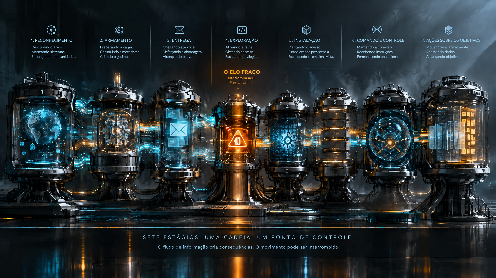
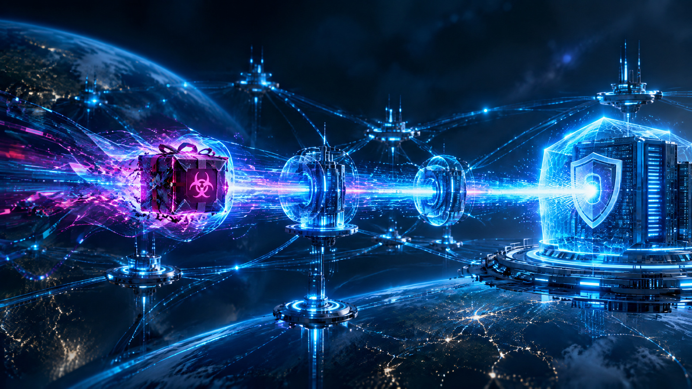
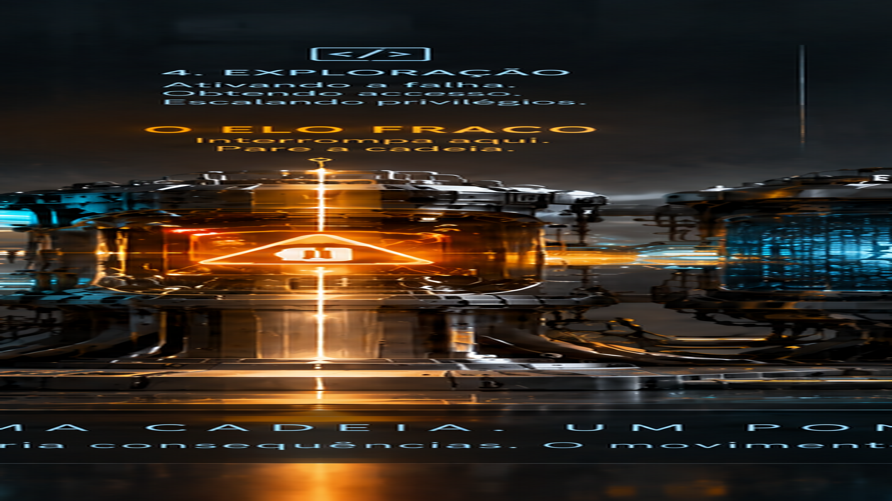
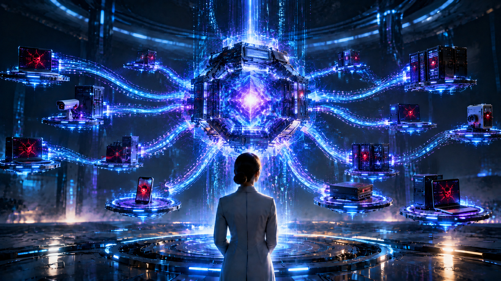
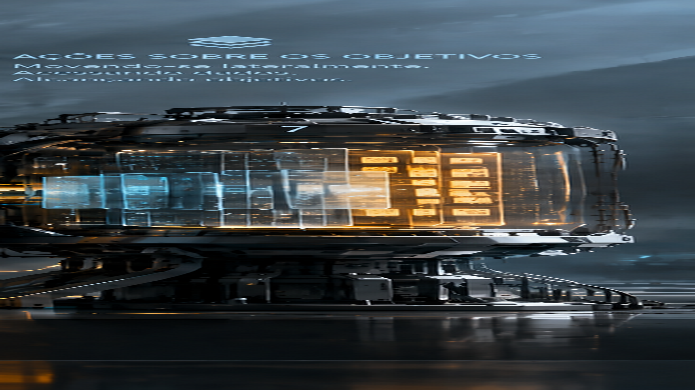
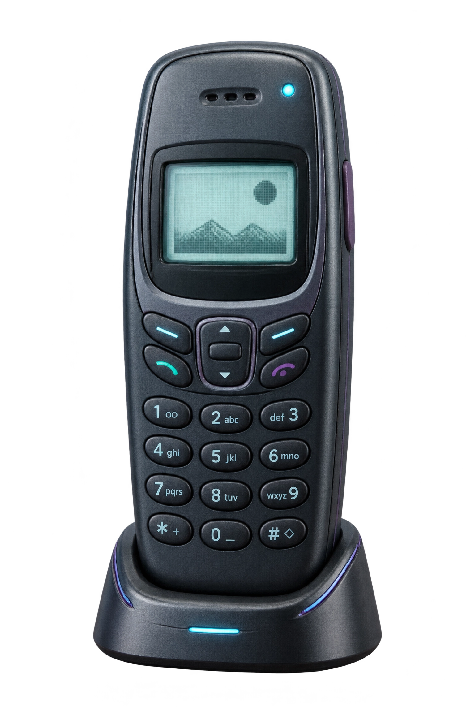
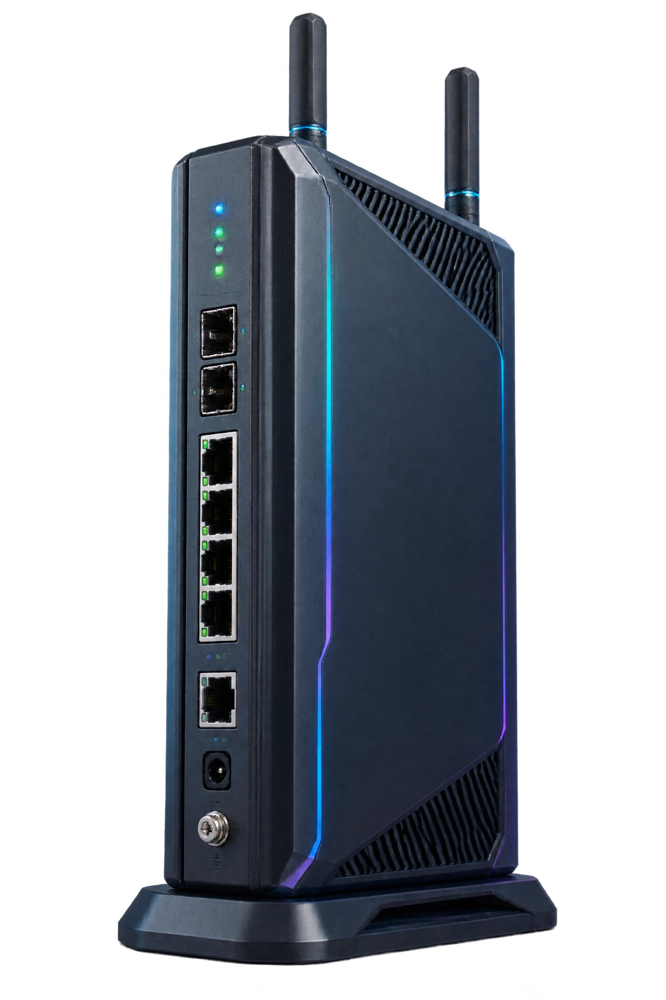

SINAL01 / 07
Reconhecimento
SINAL QUE PODE APARECER
Próximo eloArmamento →
05 / CADEIA DE ATAQUE
UMA COISA RARAMENTE CHEGA SOZINHA.
Siga uma sequência fictícia em sete movimentos. O ponto não é assistir ao ataque acontecer — é perceber onde a organização consegue mudar a história.
Entrar na sequência↓MAPA VISUAL · 07 MOVIMENTOS
Antes de entrar no teatro interativo, percorra o mapa. Cada etapa é um movimento diferente do mesmo incidente fictício. O mapa não mostra “um ataque”: mostra como pequenas decisões abrem ou fecham caminhos.

A lógica da experiência
O mesmo incidente pode parecer inevitável no fim e completamente evitável no começo. Por isso esta página troca o mapa estático por uma travessia: cada elo altera o ambiente, revela um sinal e abre uma decisão de defesa.






A EXPERIÊNCIA MUDA AQUI
Escolha onde você quer colocar a barreira. O cenário responde, a cadeia se desvia e você vê a diferença entre deixar acontecer e governar a sequência.
Escolha um elo. A simulação é local e fictícia; o objetivo é comparar o custo cognitivo de interromper cedo ou reagir tarde.
Selecione um ponto de interrupção para ver como a narrativa muda.
LEITURA PROFUNDA
As etapas são inspiradas no conceito de Cyber Kill Chain e conectadas às funções do NIST CSF 2.0 para mostrar que proteção não é um controle único: é uma conversa contínua entre governança, identificação, proteção, detecção, resposta e recuperação.
PAUSA · LEITURA
Nem todo sinal pede ação imediata. Às vezes, compreender a sequência inteira é o que permite escolher o ponto certo para colocar fricção.
SENSORIAL / SINAIS
Uma boa experiência de segurança não começa com jargão. Começa com sinais que uma pessoa consegue reconhecer.
Pedido incomum. Urgência. Credencial fora do contexto.
Processo novo. Serviço estranho. Persistência sem justificativa.
Destino novo. DNS estranho. Fluxo que não combina com a rotina.
Disponibilidade muda. Dados somem. A operação precisa reagir.
DA CADEIA AO PLANO
Use o Playbook para transformar sinais e mediações em ações que podem ser repetidas, revisadas e governadas.
REFERÊNCIAS PARA APROFUNDAR
Cyber Kill Chain ↗ MITRE ATT&CK ↗ NIST CSF 2.0 ↗ Scroll-driven Animations ↗ View Transition API ↗